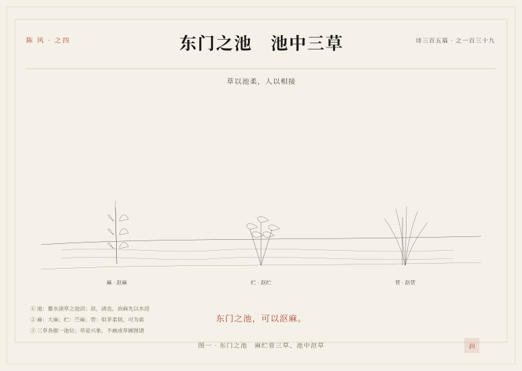
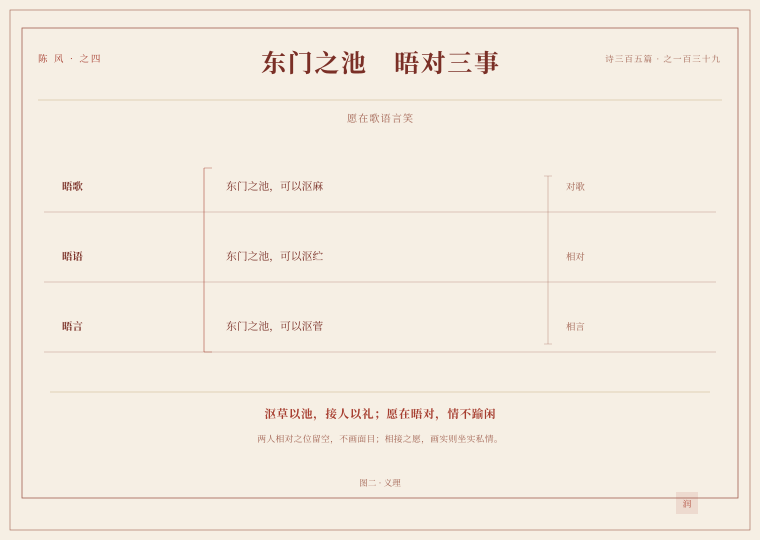

第一百三十九篇 东门之池
陈风 · 之四 SJ139
朗读 · 普通话
依经文原文朗读，章次不读出；配古琴底乐，不改速、不加拖腔。全库同一音色（豆包 TTS），非播音员录制。
一 解题
诗三判：
- 谁在说：思与贤女相接之人。东门之池可以沤麻、沤纻、沤菅；彼美淑姬，可与晤歌、晤语、晤言。
- 说什么事：三章换「麻／纻／菅」三草，「晤歌／晤语／晤言」三事；所同者是一「淑姬」之思，所进者是由歌而语而言。池以柔草，人以相接；相接之愿，止于歌语言笑。
- 为何编在此：陈风多男女相与会遇之诗。此篇与《东门之杨》同以东门为地，一写相接之愿，一写失期之怅；陈地礼防已弛，而此诗之辞仍在「可与」一愿，未及奔随。
《毛序》：“《东门之池》，刺时也。疾其君之淫昏，而思贤女以配君子也。”
朱子《诗集传》：“兴也。池，城池也。沤，渍也。治麻者，必先以水渍之。晤，犹解也。○此亦男女会遇之词。盖因其会遇之地、所见之物以起兴也。”
本库的看法：《东门之池》是一首思与贤女相接、愿与相对语笑的诗。
毛序以为疾君淫昏、思贤女配君子，是教化读法；朱子直作「男女会遇之词」，因地因物起兴。本库从朱读，以陈地淫风为背景，不把诗坐成劝纳贤女之辞。
「可与晤歌／晤语／晤言」是相接之愿，不是淫奔，不是私约，更不是已相从于野外。
断语：沤草以池，接人以礼；愿在晤对，情不踰闲。
先辨五事：「池」是城池池沼，不是池塘鱼池；「沤」是水渍柔草，不是漂洗；「淑姬」之姬是妇人美称，非谓周姓姬氏；「晤」是相对相见，「晤歌」犹对歌，不是暗会；「晤言」是相对而言，不是私订密约。
二 经文
第一章
东门之池，可以沤麻。
彼美淑姬，可与晤歌。
第二章
东门之池，可以沤纻。
彼美淑姬，可与晤语。
第三章
东门之池，可以沤菅。
彼美淑姬，可与晤言。
分章：三章，章四句。
三 韵读
- 一章：麻、歌，歌部；朱子叶「麻，谟婆反」。
- 二章：纻、语，鱼部。
- 三章：菅、言，元部；朱子叶「菅，居贤反」。
读法：三章韵由歌而鱼而元，三草由麻而纻而菅；「彼美淑姬」一章不改，是全诗之骨；歌、语、言三事由浅入深。
四 字义与名物
- 池：城池、池沼，可蓄水渍草。沤：渍也，治麻必先以水浸渍，使皮柔可缉。
- 麻：大麻，绩以为布。纻：苎麻，麻属，宿根再生，皮可缉布。菅：草名，叶似茅而滑泽，茎有白粉，柔韧，宜为索。
- 淑：善也。姬：妇人美称。晤：相对、相见。晤歌：对歌相和。晤语：相对而语。晤言：相对而言。
五 今译
东门外面的池沼，可以浸渍大麻。那位善良美好的女子，可以与她对歌相和。
东门外面的池沼，可以浸渍苎麻。那位善良美好的女子，可以与她相对而语。
东门外面的池沼，可以浸渍菅草。那位善良美好的女子，可以与她相对而言。
六 章旨
- 一章：写沤麻与晤歌。草以池柔，歌以人和；相接之愿，先在歌。
- 二章：写沤纻与晤语。纻柔于麻，语进于歌；由应声而及谈吐。
- 三章：写沤菅与晤言。菅韧可为索，言深于语；三叠之后，愿与相接之意尽出。
- 总收：三草递进以池柔之，三事递进以人接之；所不变者淑姬，所渐深者歌、语、言。
七 诗教
- 兴：以沤麻、沤纻、沤菅起兴，以水渍柔草，兴人以相接而亲；物待水而柔，人待接而亲。
- 观：观相接之序——歌先之，语次之，言之终之；由声而辞，由辞而意，层次不乱。
- 群：歌语言皆两人相对之事；一唱一和，一语一言，皆是群居相接之正。
- 怨：诗中无怨辞，只有「可与」之愿；愿而未即，所存者是礼闲之地。
八 分寸与边界
- 不可把「晤歌／晤语／晤言」读成淫奔私约。诗辞止于相对歌语言笑；一读成私奔，相接之愿就成了苟合。
- 不可把「淑姬」读成已许之妇或情人。她是所思之贤女，诗中未定其归；一坐实关系，可与之愿就成了攀附。
- 不可把沤麻、沤纻、沤菅写成农事图谱。三草是兴象，用以兴相接之渐；一味辨草木形色，诗眼就散。
- 不可把毛序「思贤女配君子」当诗面。序是教化背景读法；一从序读，男女会遇之词就成了纳女之谏。
- 不可把三章当作三件实事复述。所换者草与事，所同者一人一愿；三章一合，递进的层次就抹平了。
- 不可把「池」读成鱼池、莲池。池是蓄水渍草之处；一作赏玩之池，沤麻之兴就无着落。
九 存疑
- 诗旨：毛序「刺时，疾君淫昏，思贤女配君子」；朱子「男女会遇之词，因地因物起兴」。本库从朱读，淫风为背景。
- 「晤」训：朱子「晤，犹解也」；毛传训「晤，见也」，相对相见之义。本库从相对相见。
- 「姬」：妇人美称，还是指周姓姬女；陈为舜后妫姓，诗中称姬，旧说多歧。从美称。
- 三草次第：麻、纻、菅先后是否有精粗褒贬之比，旧无定说；诗中无文可证。
- 作者与年代：是男子思女之词，还是女子自道；诗中无主名，不可实指。
- 编次：与《东门之杨》同以东门为地，两篇相次是地类相从，还是事类相从；旧说未明。
十 跨典
- 《礼记·曲礼上》：“男女不杂坐，不同椸枷，不同巾栉。”——男女之防；晤歌晤语，皆在相接之正，不涉杂坐。
- 《左传·庄公二十四年》：“男女之别，国之大节也。”——礼防之大；陈风多失此节，此诗犹守相对之闲。
- 《孟子·滕文公上》：“男女授受不亲，礼也。”——授受之界；「可与」是愿相接，未及授受，界在礼闲。
- 《论语·泰伯》：“兴于诗，立于礼。”——诗与礼相发；歌语言笑之相接，节之以礼，乃为可与。
- 《诗经·陈风·东门之杨》（SJ140）：“昏以为期，明星煌煌。”——前篇约而不至；此篇愿而相接，彼篇期而人爽，东门两诗正反相照。
十一 双卡与图
五对：
| 池（渍草之池沼） |
池（鱼池／莲池） |
| 沤（水渍柔草） |
沤（漂洗衣物） |
| 淑姬（所思贤女美称） |
淑姬（已许之妇） |
| 晤（相对相见） |
晤（暗会私约） |
| 可与（相接之愿） |
可与（淫奔相从） |

图一 · 东门之池 麻纻菅三草、池中沤草

图二 · 东门之池 晤歌、晤语、晤言
读图三处：
- 三草：图一麻、纻、菅三茎分列池畔，叶形茎质各异，以线立形；草是兴象，不画成草圃图谱。
- 池：图一池水一道，草束浸于水中，水纹疏线；不画采者全身，只留草束与池岸。
- 三相接：图二三行「晤歌／晤语／晤言」，各系一水渍之草；中留两人相对之空位，不画面目。愿在相接，画实则坐实私情。